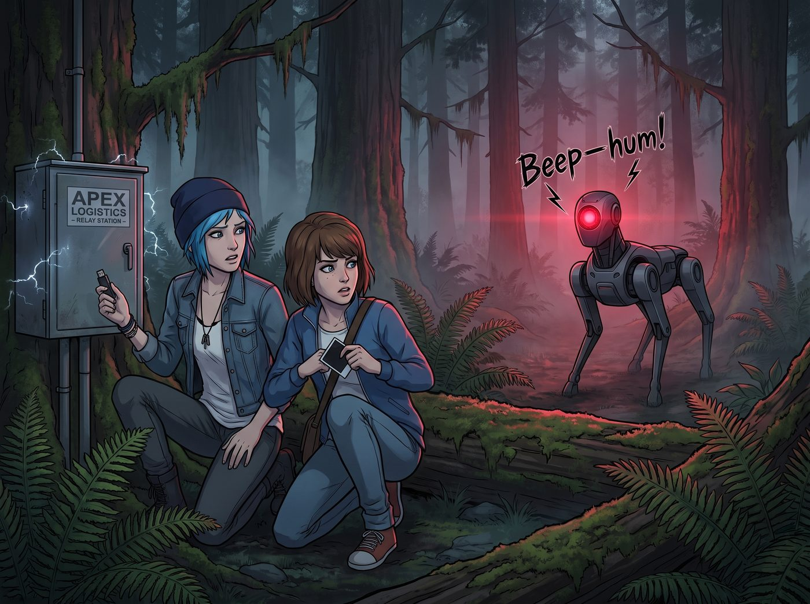

亂子與撤離

就在 Chloe 拔下USB嗅探器、Max 剛把那張無可辯駁的寶麗來底片塞進內衣口袋的瞬間，意外發生了。
Apex 物流的這群矽谷工程師雖然在軟體上不堪一擊，但他們在硬體上加裝了一個極度陰險的被動式聲納陣列。當USB拔出的瞬間，配電箱發出了一聲極其微弱的靜電爆音。
一、猩紅色的殺意
「滴——嗡！」
距離她們不到二十碼的那台四足機器狗，其頭部的光學感測器瞬間從巡邏的綠色切換成了充滿殺意的猩紅色。它那沒有五官的頭部以一種違反仿生學的姿態，一百八十度咔啦一聲直接扭向了她們藏身的灌木叢。
「警告。偵測到未授權碳基實體。啟動防禦矩陣。」
冰冷的合成電子音在雨夜的森林裡迴盪，緊接著，機器狗四肢發力，宛如一隻金屬獵豹般，踩著泥濘朝她們狂奔而來！
「老天！它發現我們了！」Max 嚇得尖叫出聲。
「跑！！！」Chloe 一把拽住 Max 的手腕，朝著森林深處狂奔。
二、非理性硬體折舊
二號車廂裡，原本悠哉喝著洋甘菊茶的 Kate 嚇得摀住了嘴。而實習生 Lily 的大眼睛裡，卻閃過了一絲宛如頂級掠食者看到獵物落網般的狂熱。
「計畫變更。啟動動態資產強制核銷程序。」Lily 的雙手在鍵盤上砸出一片殘影，軟糯的聲音透過通訊器，以一種令人頭皮發麻的絕對冷靜傳入兩人耳中：「Chloe 學姐，Max 學姐，原定的A點撤離路線已被鎖死。請立刻轉向十一點鐘方向，前往備用撤離點Bravo。」
「妳最好有辦法對付這隻鐵皮狗，Lily！它離我的屁股只剩十碼了！」Chloe 一邊在泥濘中狂奔，一邊對著麥克風大吼。
「請放心。我已經完成了 Apex 內部物流無人機的權限覆寫。」螢幕前，Lily 輕輕敲下了最後一個回車鍵，嘴角勾起一抹純潔的微笑：「現在，它們是我們的快速反應部隊了。」
森林上空，突然傳來了宛如巨大蜂群過境般的恐怖嗡嗡聲。
三十多架原本用來運送矽谷有機沙拉和高價電子產品的重型六軸送貨無人機，在 Lily 的操控下，全部關閉了避障雷達，將底層協議修改為最高速度與目標鎖定。
「啟動非理性硬體折舊。」Lily 輕聲說道。
「轟！轟！轟！」
只見夜空中，幾十架無人機像是一顆顆自走砲彈，排著密集的陣型，以極度慘烈且決絕的姿態，從半空中瘋狂地朝著那兩隻追擊的機器狗俯衝、撞擊！
金屬零件碎裂的聲音、螺旋槳折斷的尖銳聲在森林裡炸開。那些造價高昂的機器狗雖然裝甲堅固，但也經不起這種自殺式的無人機雨洗禮，關節被撞斷，感測器被砸瞎，最終冒著黑煙癱瘓在了泥地裡。
「這……這太瘋狂了！」Max 一邊跑，一邊回頭看著那場昂貴的金屬雨。
「這叫敵意併購，Maxine！繼續跑！」Chloe 興奮地大笑起來。
三、藏在土坑裡的鋼鐵野獸
兩分鐘後，兩人氣喘吁吁地衝到了 Lily 指定的Bravo撤離點。這是一個隱蔽在巨大紅木下、蓋著迷彩防水布的土坑。
Chloe 毫不猶豫地衝過去，一把扯下防水布。
出現在眼前的，不是什麼環保的電動車，而是一台被重度改裝過、加裝了防滾架與全地形越野寬胎的汽油驅動四輪摩托車。這台宛如廢土狂野機器般的巨獸，是 Chloe 用上個月報廢車輛處理費的名義偷偷買下來，並提前藏在這裡的終極逃生底牌。
「上車！抱緊我！」
Chloe 長腿一跨騎了上去，Max 幾乎是把自己像八爪魚一樣死死黏在 Chloe 的背上。
Chloe 猛地扭動油門。
「轟隆——！！」
V型雙缸引擎發出了狂暴的轟鳴聲。排氣管噴出一團黑煙，這頭鋼鐵野獸在泥地裡刨出兩道深深的溝壑，載著她們以時速七十英里的速度，像一顆狂暴的子彈般射入夜色，徹底將那座混亂的矽谷新創營地甩在身後。
四、烈士般的犧牲
車廂裡，看著衛星畫面上那個代表越野車的高亮熱源安全駛離，Lily 滿意地合上了筆記本電腦。
「午夜合規審計行動，無人員傷亡。已產生約三百萬美金的敵方硬體損耗。」Lily 乖巧地端起茶杯，向身旁的 Kate 匯報。
小天使 Kate 雙手交握在胸前，看著螢幕上那些墜毀在機器狗周圍、冒著火花的無人機殘骸，眼眶微紅。
「哇……這些小無人機真的太勇敢了。」Kate 溫柔地喃喃自語，彷彿在為烈士祈禱，「它們為了保護 Chloe 和 Max，毫不猶豫地給了那些兇惡的金屬狗狗一個最熱烈的擁抱。雖然它們破碎了，但它們在空中劃過的軌跡，就像是流星一樣美麗呢。」
Lily 聽著這番解讀，默默地把那句「我只是篡改了它們的防撞協定強制它們去死」嚥了回去，乖巧地點了點頭。